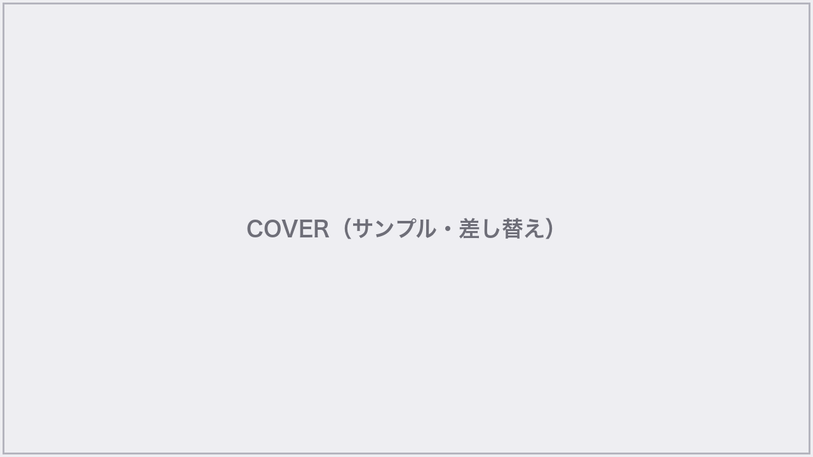
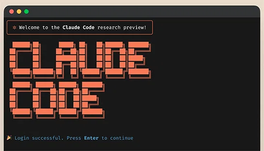

アイウエオ
AIUEO INC. / FREE ONLINE SEMINAR
AI社員を3人雇ったら、
営業しない月でも
売上が伸びた話
営業しない月でも
売上が伸びた話
営業事務・集客・顧客対応をAI社員に任せる
仕組みを、当事者が中身まで話す60分
仕組みを、当事者が中身まで話す60分
60分 / 無料 / ONLINE LIVE

カバー画像はサンプル（本番で差し替え） / SEMINAR PRESENTATION DECK
株式会社アイウエオ / Speaker Introduction
SPEAKER
A
マーケティング責任者
AIUEO Inc.
社員14名の会社の「1人マーケ」
AI社員3人の運用当事者
自分の作業の大半を、3人のAI社員に任せてきました。
会社
社員14名。AIマーケティング支援と AIO Marketing OS の提供（架空の設定）。
導入
2026年2月に 営業事務・集客・顧客対応 のAI社員3人を導入。
今日
売り文句ではなく、当事者の記録として中身と失敗を話す。
アイウエオ
本日の流れ
1営業しなかった5月に、何が起きたか
2なぜ、人が頑張るほど売上が止まるのか
3AI社員に、仕事を任せる仕組み
4自社で始めるには（無料相談のご案内）
1
営業しなかった月に、
何が起きたか
何が起きたか
MAY, WITHOUT SALES ACTIVITY
AIO Marketing OS / Free Seminar
アイウエオ
もし来月、営業活動をゼロにしたら——
御社の売上は、どうなりますか？
アイウエオ
MAY RESULTS
営業しなかった5月、
うちはこうなった
うちはこうなった
※数値はすべて架空の
サンプル値です
サンプル値です
+18%
5月売上（前年同月比）
62%
新規売上の自動フォロー経由率
月19時間
減った営業事務（23h→4h）
10分
一次返信（以前は約9時間）
週3本
集客コンテンツ（以前は月1本）
3人
この月も動いていたAI社員
アイウエオ
OUTPUT SAMPLE / FOLLOW-UP EMAIL
新規売上の62%は、
AI社員の一通から
AI社員の一通から
過去の問い合わせに、顧客対応AI社員が状況に合わせたフォローを下書き。人がやったのは送信前の確認だけ。
※画面はイメージ（サンプル）です

2
なぜ、人が頑張るほど
売上が止まるのか
売上が止まるのか
WHY EFFORT DOESN'T SCALE
アイウエオ
COMMON PAIN
この状態、心当たりありませんか
営業は、社長だけ
新規開拓が社長個人の稼働に張り付いている。
夕方が事務で消える
見積書・請求書・議事録で、売る時間がなくなる。
返信が翌日になる
返す頃には、相手の検討の熱が冷めている。
発信が続かない
ブログもメルマガも「余裕がある月」だけ。
アイウエオ
THE REAL PROBLEM
問題は、人手不足ではありません。
売上を作る仕事が、
人の手が空くまで止まることです。
売上を作る仕事が、
人の手が空くまで止まることです。
アイウエオ
METAPHOR
営業に頼った売上は、
毎回バケツで水を汲みに行くのに似ている
毎回バケツで水を汲みに行くのに似ている
バケツで汲む
頑張った月だけ水が出る。汲む人が休むと、水も止まる。
水道を引いておく
一度つなげば、蛇口をひねるだけ。人が動かない日も、水は流れる。
3
AI社員に、
仕事を任せる仕組み
仕事を任せる仕組み
HOW TO DELEGATE TO AI EMPLOYEES
アイウエオ
THE FORMULA
任せられる仕事 = 判断基準 × 手順 × 成果物の型
判断基準
何がOKで何がNGか。
会社の前提と優先順位
会社の前提と優先順位
×
手順
いつ・何を・どの順で
やるかの段取り
やるかの段取り
×
成果物の型
見積書・記事・返信文の
「お手本」
「お手本」
この3つを紙に書ける仕事から、AI社員に任せられる。
アイウエオ
OUR 3 AI EMPLOYEES
うちで働く3人のAI社員
※効果の数値は
サンプル値です
サンプル値です


① 営業事務AI社員
見積書・請求書・議事録・日報を下書き。人は最終確認だけ。
事務作業 月23h → 4h


② 集客AI社員
記事・メルマガ・LP原稿を、ネタ出しから下書きまで先回り。
発信 月1本 → 週3本

③ 顧客対応AI社員
問い合わせの一次返信と、過去客への自動フォロー。5月の立役者。
一次返信 約9時間 → 10分
アイウエオ
BEFORE / AFTER
人の仕事が、作業から「確認と判断」に変わる
BEFORE
・見積、請求、議事録に追われる
・返信は手が空いた夜にまとめて
・発信は「余裕がある月」だけ
・返信は手が空いた夜にまとめて
・発信は「余裕がある月」だけ
AFTER
・下書きと送り物はAI社員が先回り
・人は、確認と判断だけ
・発信とフォローが止まらない
・人は、確認と判断だけ
・発信とフォローが止まらない
アイウエオ
HONESTLY...
ただ、正直に言うと——
ツールを入れただけでは、
動きませんでした
動きませんでした
アイウエオ
COMMON QUESTIONS
先に、よくある3つの不安に答えます
Q. ITに強い社員がいなくても大丈夫？
大丈夫です。うちも専任ゼロ。普段の言葉で指示できる形に整えて任せます。
Q. 何から任せればいい？
「判断基準・手順・型」を紙に書ける仕事から。多くの会社は営業事務が最初です。
Q. 費用対効果が読めない…
まず「浮いた作業時間」で測ります。うちは月19時間でした（サンプル値）。
アイウエオ
OS
FOR YOUR COMPANY
その「任せ方の設計」を一緒にやる
AIO Marketing OS 導入伴走プラン
AIO Marketing OS 導入伴走プラン
3人のAI社員（営業事務・集客・顧客対応）を御社仕様で構築し、定着まで毎月伴走します。
アイウエオ
この伴走一式を、月額この価格で
AIO Marketing OS 導入伴走プラン
98,000円/月
税別 / 最低3ヶ月 / 伴走ミーティング月2回
※価格・条件は架空のサンプルです
3人のAI社員の構築込み
平日チャット相談つき
まずは無料相談から
アイウエオ
FINAL STEP / 無料
まずは
30分の無料相談で
話しましょう
30分の無料相談で
話しましょう
「御社なら、どの仕事から任せられるか」を一緒に整理します。その場で契約を迫ることはありません。
無料相談を予約する
QR / 予約フォームから（QRはサンプル）
example.com/aiueo-consult